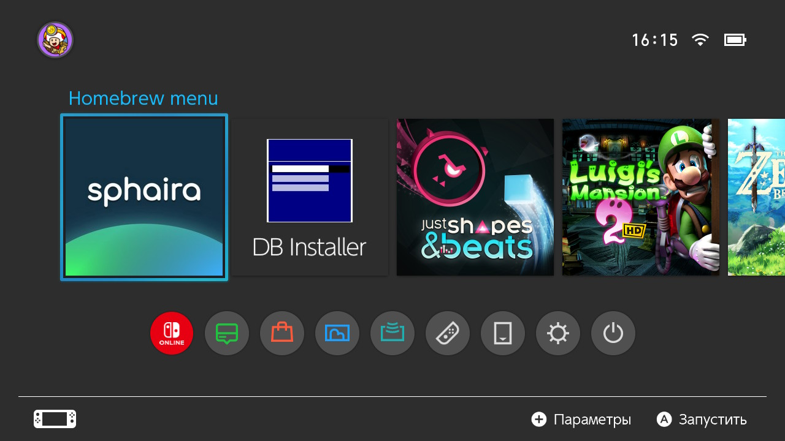
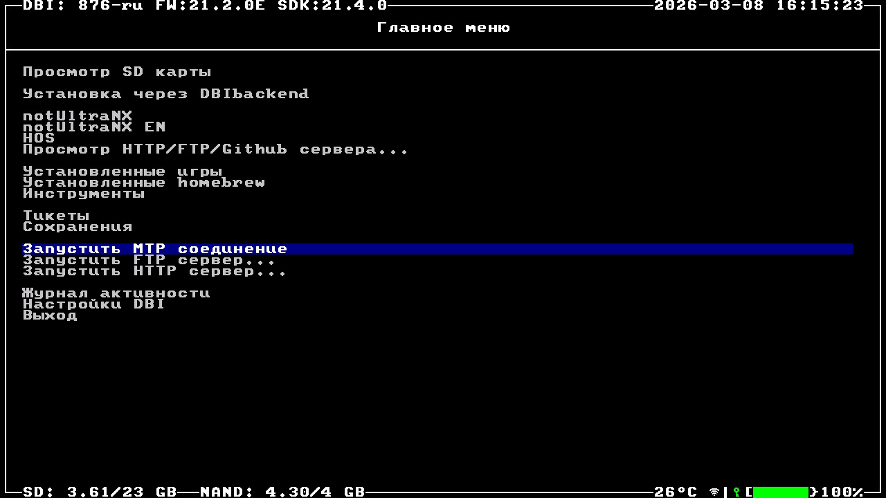
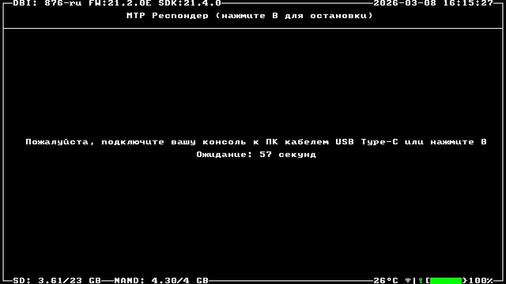
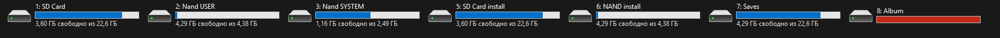
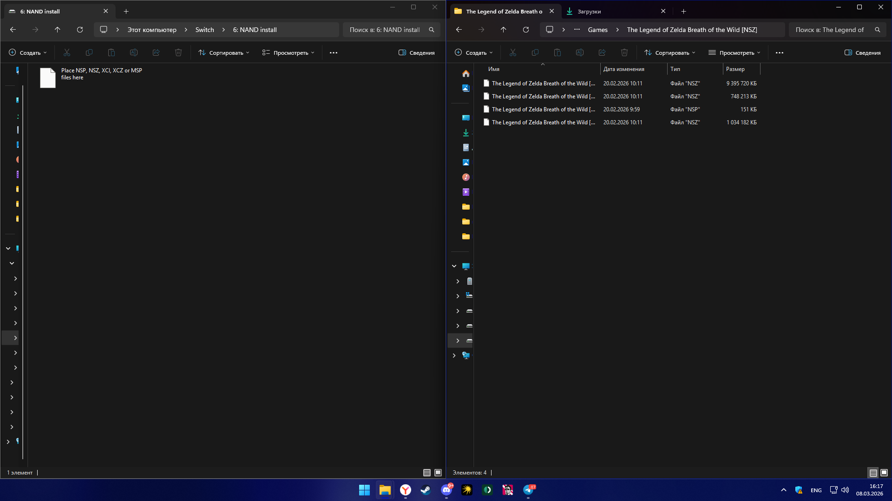

Установка игр по кабелю
Самый быстрый и безопасный способ установки игр (в форматах .nsp, .nsz, .xci) напрямую с ПК на консоль с помощью программы DBI.
Инструкция по установке через MTP
-
Открытие DBI. Зайдите в меню Homebrew и запустите программу DBI.
Примечание: Если у вас на главном экране нет иконки Homebrew, вам нужно зайти через Applet Mode. Для этого зажмите кнопки L и R на джойконах и, не отпуская их, откройте стандартное приложение Альбом.

-
Запуск MTP сервера. В главном меню DBI спуститесь вниз и выберите пункт Run MTP responder. На экране появится надпись об ожидании подключения.

-
Подключение к ПК. Подключите вашу консоль к компьютеру с помощью надежного кабеля USB Type-C. На экране Switch появится статус соединения.

-
Выбор диска для установки. На компьютере (в разделе "Этот компьютер") появится новое устройство с именем Switch. Откройте его и перейдите в виртуальную папку 5: MicroSD install (или NAND install, если хотите установить во внутреннюю память).

-
Копирование файлов. Просто перетащите файлы скачанных игр (и обновления к ним) в эту открытую папку. Процесс установки начнется автоматически. По завершении игра появится на главном экране консоли!
